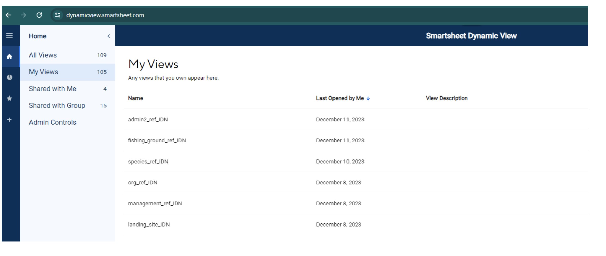
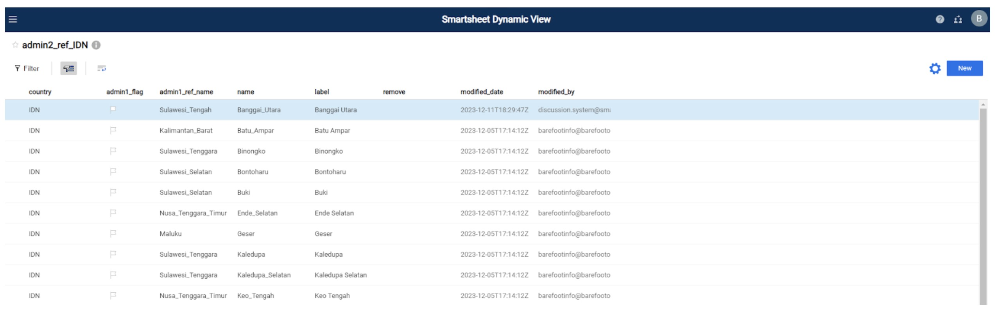
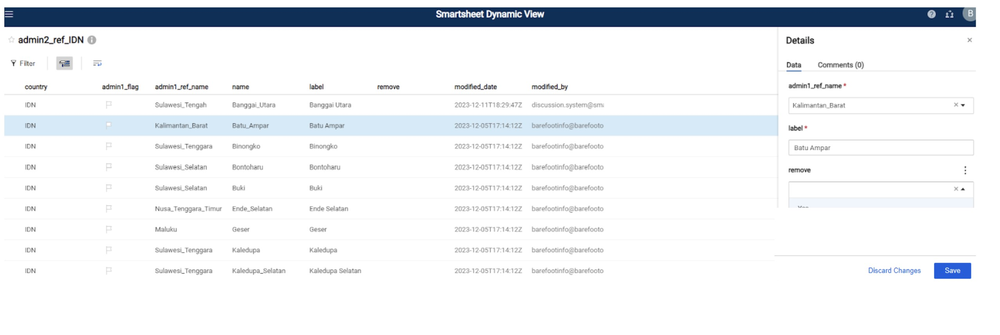
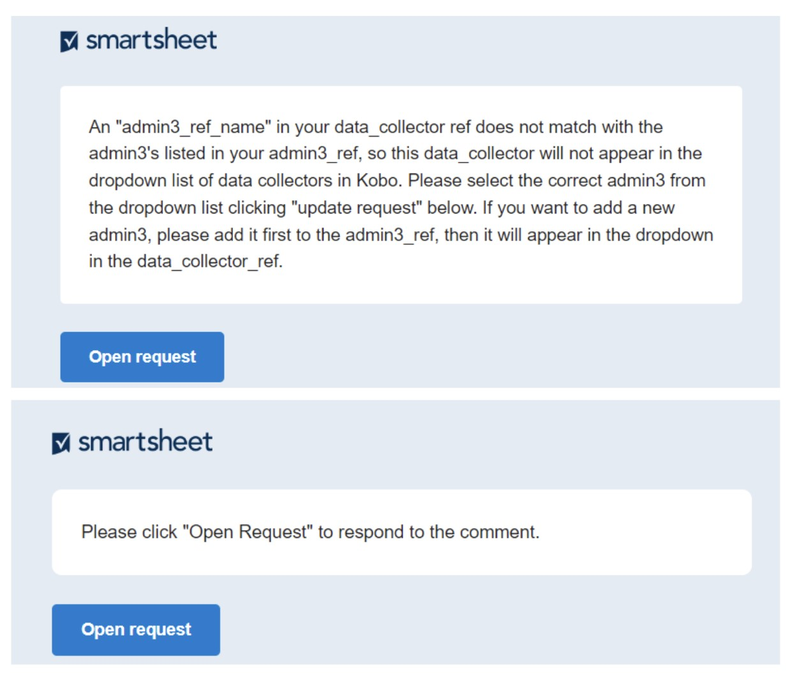
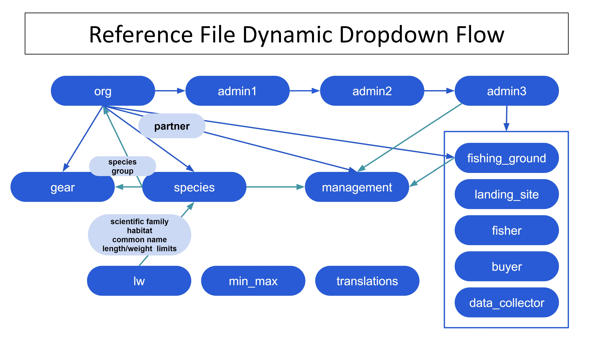

Reference Files
Updating Reference Files
All reference files are updated in Smartsheet Dynamic View. Reference files serve as inputs for dropdown lists in KoboToolbox forms and contain data that is added to the master datasets through joins. They contain comprehensive information on the administrative levels of the fishing communities (country, province, district, village), landing sites, fishing ground, fishers, buyers, data collectors, species, management areas, gear types, and partnering organizations. The steps below outline how to update reference files with new information.
Step 1: Create a free smartsheet account.
A free account can be created at https://www.smartsheet.com/
Select “Try smartsheet for free”
Step 2: Provide Blue Ventures (BV) the email address you used to create your smartsheet account.
BV will then share the reference files associated with your organization.
To view your reference files you will need to sign into smartsheet Dynamic View using your smartsheet credentials: https://dynamicview.smartsheet.com/login
Once logged in to Dynamic View (not the smartsheet app), you will see a list of reference files shared with your account (Figure 1).
Figure 1: List of reference files in Dynamic View

Step 3: Click on a reference file to make updates
Once open, you can click on each row to make edits to existing data, or click the “New” button in the top right corner to add new data (Figure 2).
A details panel will appear on the right hand side where you’ll input the necessary information (Figure 3; Table 1). Select “save” on the bottom right of the details panel when you are finished updating.
To leave a comment or to ask the team any questions, select the “Comments” tab in the details panel. All individuals that the reference file is shared with, including the BV team, will receive notification when a comment is made, so there is no need to tag any particular individual.
Figure 2: Example view of the admin2_ref in Dynamic View

Figure 3: Example view of the admin2_ref details panel in Dynamic View

Step 4: Respond to update requests when data is missing or incorrect, or to respond to a comment.
If there is incomplete or incorrect information that is essential for populating Kobo dropdowns or for joins, or if a comment is made in the sheet, an update request will be sent to all appropriate users, prompting them to update the information or respond to a comment (Figure 4). By default, everyone with access to your reference files will receive the update request.
A preview of the data that needs to be updated or responded to will appear below the email message, but you will not be able to update any data directly in the email
- At the bottom of the email, there is a link for “Go to the sheet”; however, the underlying sheet has restricted access. Please review your data or respond to the comment via Open request.
Click on the “Open Request” button in the email message.
A new internet browser window will open with a form-like setup for each entry (Figure 5)
Review the BV fields and populate the editable fields.
Click next at the bottom of the screen to move through each entry that needs to be updated.
To skip an entry (e.g. if you are not sure yet which answer to pick) click “Next” without making a selection in the editable columns. The next entry that needs to be updated will appear.
If you need to exit the page or stop before all entries have been updated, your choices should be saved the next time you reopen the request. Upon opening to continue, just click “Next” until you find an entry that needs to be updated.
When you get to the last entry, click “Done”. A pop-up message will appear asking if you are ‘Ready to submit your update?’:
Click “Go Back” if you need to review
Click “Submit Update” to submit your updates.
Your updates are automatically appended to the reference file and you can view them in Dynamic View
Figure 4: Example “Update Request” email when information needs to be corrected or comment needs to be responded to.

Table 1: The primary fields in each of the reference files. Field type “BV” is managed by Blue Ventures and is not editable. To request changes to any of the “BV” fields, please leave a comment. Only fields with field type “editable” can be edited. Field type “auto” is populated automatically.
| Field name | Field description | Field type |
|---|---|---|
| All reference files | ||
| latest_comment | This column stores the last comment that was made for that row. To view the entire discussion of comments for that row, simply click anywhere on the row. The details panel will appear, like it does in Figure 3. Click on the “Comments” tab to view all comments for that row. | auto |
| modified_date | Date of last edit | auto |
| modified_by | User that made the last edit | auto |
| active | Select “Yes” if data is currently being collected from this individual/area. If data is no longer being collected from this individual/area, and you want to hide it from the Kobo dropdown, select “No.” | editable |
| remove | Choose “Yes” if you would like to remove the record. Records should only be removed if the name is incorrect or it is a duplicate of an existing record. | editable |
| admin1_ref | ||
| country | ISO country code, which is an internationally recognized letter combination code | BV |
| name | Name of admin1, the highest administrative level after country (i.e. province) with no spaces and no punctuation, only underscores | BV |
| label | Name of admin1, the highest administrative level after country (i.e. province) with spaces and punctuation allowed. Please do not change the label unless absolutely necessary, as joins are based on this. | editable |
| partner_flag | The flag will be red if the “partner” value does not exist in the org_ref | BV |
| partner | Partner name with no spaces and no punctuation, only underscores. The dropdown list is connected to the “name” column in the org_ref. | editable |
| admin2_ref | ||
| country | ISO country code, which is an internationally recognized letter combination code | BV |
| name | Name of admin2, the highest administrative level after admin1 (i.e. district) with no spaces and no punctuation, only underscores | BV |
| label | Name of admin2, the highest administrative level after admin1 (i.e. district) with spaces and punctuation allowed. Please do not change the label unless absolutely necessary, as joins are based on this. | editable |
| admin1_flag | The flag will be red if the “admin1_ref_name” value does not exist in the admin1_ref | BV |
| admin1_ref_name | Admin1 name with no spaces and no punctuation, only underscores. The dropdown list is connected to the “name” column in the admin1_ref. | editable |
| admin3_ref | ||
| country | ISO country code, which is an internationally recognized letter combination code | BV |
| name | Admin2 and admin3 names combined with no spaces and no punctuation, only underscores.The admin3 is the highest administrative level after admin2 (i.e. village). | BV |
| label | Name of admin3, the highest administrative level after admin2 (i.e. village) with spaces and punctuation allowed. Please do not change the label unless absolutely necessary, as joins are based on this. | editable |
| admin1 | Admin1 name with spaces and punctuation allowed. This is pulled from the admin1_ref and auto populated based on the admin2 chosen. | BV |
| admin1_ref_name | Admin1 name with no spaces and no punctuation, only underscores. This is pulled from the admin1_ref and auto populated based on the admin2 chosen | BV |
| admin2_flag | The flag will be red if the “admin2” value does not exist in the admin2_ref. | BV |
| admin2 | Admin2 name with spaces and punctuation allowed. The dropdown list is connected to the “label” column in the admin2_ref. | editable |
| admin2_ref_name | Admin2 name with no spaces and no punctuation, only underscores. This is pulled from the admin2_ref and auto populated based on the admin2 chosen. | BV |
| admin3_lat | Latitude of admin3 | editable |
| admin3_long | Longitude of admin3 | editable |
| landings_mon | Select “Yes” if you want the admin3 to appear in the dropdown for the Kobo landings monitoring form. | editable |
| landings_prof | Select “Yes” if you want the admin3 to appear in the dropdown for the Kobo landings profiling form. | editable |
| comm_prof | Select “Yes” if you want the admin3 to appear in the dropdown for the Kobo community profiling form. | editable |
| hhs | Select “Yes” if you want the admin3 to appear in the dropdown for the Kobo household survey form. | editable |
| buyer_ref | ||
| country | ISO country code, which is an internationally recognized letter combination code | BV |
| name | Name of the buyer with no spaces and no punctuation, only underscores | BV |
| label | Name of the buyer with spaces and punctuation allowed. Please do not change the label unless absolutely necessary, as joins are based on this. | editable |
| buyer_gender | Gender of the buyer; ‘male’, ‘female’, ‘nonbinary’ or ‘business_nogender’ | editable |
| gender_flag | The flag will be red if the buyer_gender value is different for the same buyer (i.e. if Raymond Scott in admin3= Boston has gender=male, but Raymond Scott in admin3=Miami has gender=female, the flag will be red because the genders are not the same for the same buyer). | BV |
| admin1 | Admin1 name where the buyer buys from, with spaces and punctuation allowed. This is pulled from the admin1_ref and auto populated based on the admin3_ref_name chosen. | BV |
| admin2 | Admin2 name where the buyer buys from, with spaces and punctuation allowed. This is pulled from the admin2_ref and auto populated based on the admin3_ref_name chosen. | BV |
| admin3 | Admin3 name where the buyer buys from, with spaces and punctuation allowed. This is pulled from the admin3_ref and auto populated based on the admin3_ref_name chosen. | BV |
| admin3_ref_name | Admin2 and admin3 names combined with no spaces and no punctuation, only underscores.The dropdown list is connected to the “name” column in the admin3_ref. | editable |
| admin3_flag | The flag will be red if the “admin3_ref_name” value does not exist in the admin3_ref. | BV |
| fisher_ref | ||
| country | ISO country code, which is an internationally recognized letter combination code | BV |
| name | Name of the fisher with no spaces and no punctuation, only underscores | BV |
| label | Name of the fisher with spaces and punctuation allowed. Please do not change the label unless absolutely necessary, as joins are based on this. | editable |
| fisher_gender | Gender of the fisher; ‘male’, ‘female’, ‘nonbinary’ or ‘business_nogender’ | editable |
| gender_flag | The flag will be red if the fisher_gender value is different for the same fisher (i.e. if Raymond Scott in admin3= Boston has gender=male, but Raymond Scott in admin3=Miami has gender=female, the flag will be red because the genders are not the same for the same fisher). | BV |
| admin1 | Admin1 name where the fisher lands their catch, with spaces and punctuation allowed. This is pulled from the admin1_ref and auto populated based on the admin3_ref_name chosen. | BV |
| admin2 | Admin2 name where the fisher lands their catch, with spaces and punctuation allowed. This is pulled from the admin2_ref and auto populated based on the admin3_ref_name chosen. | BV |
| admin3 | Admin3 name where the fisher lands their catch, with spaces and punctuation allowed. This is pulled from the admin3_ref and auto populated based on the admin3_ref_name chosen. | BV |
| admin3_ref_name | Admin2 and admin3 names combined with no spaces and no punctuation, only underscores.The dropdown list is connected to the “name” column in the admin3_ref. | editable |
| admin3_flag | The flag will be red if the “admin3_ref_name” value does not exist in the admin3_ref. | BV |
| data_collector_ref | ||
| country | ISO country code, which is an internationally recognized letter combination code | BV |
| name | Name of the data collector with no spaces and no punctuation, only underscores | BV |
| label | Name of the data collector with spaces and punctuation allowed. | editable |
| gender | Gender of the data collector; ‘male’, ‘female’, ‘nonbinary’ or ‘business_nogender’ | editable |
| admin3_flag | The flag will be red if the “admin3_ref_name” value does not exist in the admin3_ref. | BV |
| admin3_ref_name | Admin2 and admin3 names combined with no spaces and no punctuation, only underscores.The dropdown list is connected to the “name” column in the admin3_ref. | editable |
| landings_mon | Select “Yes” if you want the data collector to appear in the dropdown for the Kobo landings monitoring form. | editable |
| landings_prof | Select “Yes” if you want the data collector to appear in the dropdown for the Kobo landings profiling form | editable |
| hhs | Select “Yes” if you want the data collector to appear in the dropdown for the Kobo household survey form | editable |
| comm_prof | Select “Yes” if you want the data collector to appear in the dropdown for the Kobo community profiling form | editable |
| fishing_ground_ref | ||
| country | ISO country code, which is an internationally recognized letter combination code | BV |
| name | Name of the fishing ground with no spaces and no punctuation, only underscores | BV |
| label | Name of the fishing ground with spaces and punctuation allowed. Please do not change the label unless absolutely necessary, as joins are based on this. | editable |
| admin3_flag | The flag will be red if the “admin3_ref_name” value does not exist in the admin3_ref. | BV |
| admin3_ref_name | Admin2 and admin3 names combined with no spaces and no punctuation, only underscores.The dropdown list is connected to the “name” column in the admin3_ref. | editable |
| partner_flag | The flag will be red if the “partner” value does not exist in the org_ref | BV |
| partner | Partner name with no spaces and no punctuation, only underscores. The dropdown list is connected to the “name” column in the org_ref. | editable |
| latitude | Latitude of the fishing ground | editable |
| longitude | Longitude of the fishing ground | editable |
| gear_ref | ||
| country | ISO country code, which is an internationally recognized letter combination code | BV |
| name | Local name of the gear with no spaces and no punctuation, only underscores | BV |
| label | Local name of the gear with spaces and punctuation allowed. Please do not change the label unless absolutely necessary, as joins are based on this. | editable |
| gear_global | English name of the gear with no spaces and no punctuation, only underscores. This is a predefined dropdown list. Please choose one that best fits the local gear, or comment if you are unsure. | editable |
| gear_detail | Description of the gear | editable |
| species_group | The species group the gear targets. If one gear targets multiple species, create a new row of data for each species group. The dropdown list is connected to the “species_group” column in the species_ref. | editable |
| species_flag | The flag will be red if the “species_group” chosen does not exist in the species_ref. | BV |
| partner | Partner name with no spaces and no punctuation, only underscores. The dropdown list is connected to the “name” column in the org_ref. | editable |
| partner_flag | The flag will be red if the “partner” value does not exist in the org_ref | BV |
| landing_site_ref | ||
| country | ISO country code, which is an internationally recognized letter combination code | BV |
| name | Name of the landing site with no spaces and no punctuation, only underscores | BV |
| label | Name of the landing site with spaces and punctuation allowed | editable |
| admin3_flag | The flag will be red if the “admin3_ref_name” value does not exist in the admin3_ref. | BV |
| admin3_ref_name | Admin2 and admin3 names combined with no spaces and no punctuation, only underscores.The dropdown list is connected to the “name” column in the admin3_ref. | editable |
| management_ref | ||
| country | ISO country code, which is an internationally recognized letter combination code | BV |
| partner_ID | Partner name with no spaces and no punctuation, only underscores. The dropdown list is connected to the “name” column in the org_ref. | editable |
| partner_flag | The flag will be red if the “partner” value does not exist in the org_ref | BV |
| management_id_unique | Unique name of the management area and effective dates. More specifically, it contains the following information separated by an underscore: management_id, management_method, close_date and open_date. | BV |
| management_id | Unique name of the management area with spaces and punctuation allowed. Please do not change the name unless absolutely necessary, as joins are based on this. | editable |
| admin3_fish | The list of admin3s that fish within the management area. | editable |
| admin3_fish_flag | The flag will be red if one of the admin3s listed in the “admin3_fish” column does not exist in the admin3_ref. | BV |
| admin3_govern | The list of admin3s that have a role in governing the management event. | editable |
| admin3_govern_flag | The flag will be red if one of the admin3s listed in the “admin3_govern” column does not exist in the admin3_ref. | BV |
| management_fishing_ground | The list of fishing grounds associated with the management event. The dropdown list is connected to the “name” column in the fishing_ground_ref. | editable |
| fishing_ground_flag | The flag will be red if one of the fishing grounds listed in “management_fishing_ground” does not exist in the fishing_ground_ref. | BV |
| management_method | The type of management method utilized during the event. The predefined list includes: Temporary Closure, No Take Zone, Gear Restriction, Managed Access, Harvesting Ban or Deforestation Ban. | editable |
| regulation_type | The type of legal regulation. The predefined list includes: village head regulation, village head decree, joint village head regulation or none. | editable |
| target_group | Target species group for the managed area. This can include ‘All’, one or multiple species groups. The dropdown list is connected to the MASTER species_ref and includes species groups from all partners. | editable |
| target_species | Target species for the managed area. This can include ‘All_species’, one or multiple scientific species. The dropdown list is connected to the MASTER species_ref and includes species from all partners. | editable |
| species_flag | The flag will be red if the “target_species” chosen is not referenced in the partner’s species_ref. | BV |
| target_habitat | Target habitat for the managed area. The predefined dropdown list includes the habitat choices: ‘reef, seagrass, mangrove, mud_flat, sand, deepwater or other’. | editable |
| management_area_ha | Size of the managed area measured in hectares (ha) | editable |
| close_date | Closing date of the managed area; MM/DD/YY | editable |
| open_date | Opening date of the managed area; MM/DD/YY | editable |
| management_lat | Latitude of management area | editable |
| management_long | Longitude of management area | editable |
| org_ref | ||
| country | ISO country code, which is an internationally recognized letter combination code | BV |
| name | Name of the partner/organization with no spaces and no punctuation, only underscores | BV |
| label | Name of the partner/organization with spaces and punctuation allowed. Please do not change the label unless absolutely necessary, as joins are based on this. | editable |
| species_group | The species groups the partner collects data on. The dropdown list is connected to the “species_group” column in the species_ref. Select all groups if they want all species in the species_ref to show up. | editable |
| species_ref | ||
| country | ISO country code, which is an internationally recognized letter combination code | BV |
| partner | Partner name with no spaces or punctuation, only underscores. Species dropdowns are filtered by the partner. Some countries have multiple partners that share a species list. In that case, you will see the country code instead of the partner, and the entire species list will show for every partner in that country, unless certain species groups are specified in the “species_group” column in the org_ref. | BV |
| habitat | Habitat type associated with the species | BV |
| name | Local name and species name combined with an underscore, with no other punctuation or spaces. | BV |
| label | Local name with species name in parenthesis | BV |
| species_group | Species categorized into groups based on their biology with no spaces or punctuation, only underscores. This field is used to help filter certain answer choices in Kobo. | BV |
| species_flag | The flag will be red if the “species_group” chosen is not referenced in the gear_ref. That means all gears listed in the gear_ref will appear for this species group. To only show gears that target this species group, please add the species group to the gear_ref. | BV |
| local_name | Local species name with spaces and punctuation allowed | editable |
| admin1-3 | Name of admin1, 2 or 3 with no spaces or punctuation, only underscores. The dropdown list is connected to the “name” column in the corresponding admin_ref. This field will only show for partners that want the species dropdown filtered by that admin. | editable |
| common_english | Common English species name with spaces and punctuation allowed | BV |
| scientific_family | Family name of a species with spaces and punctuation allowed | BV |
| scientific_species | Scientific name of the species with spaces and punctuation allowed. If the species is unknown, the genus or family can also be entered. If only the genus is known, type the name of the genus followed by “sp” (as opposed to “spp” or sp.”). If only the family is known, type the name of the family (i.e. Lutjanidae). | editable |
| length_limit_max | Maximum length limit (cm) used for value warnings. See lw_ref for more information. | BV |
| length_limit_min | Minimum length limit (cm) used for value warnings. See lw_ref for more information. | BV |
| weight_limit_max | Maximum weight limit (kg) used for value warnings based on the ‘length_limit_max’, ‘a’, and ‘b’ values, auto-calculated in Smartsheet using the formula “=(([length_limit_max]@row ^ b@row) * a@row) / 1000”. See lw_ref for more information. | BV |
| weight_limit_min | Minimum weight limit (kg) used for value warnings based on the ‘length_limit_min’, ‘a’, and ‘b’ values, auto-calculated in Smartsheet using the formula”=(([length_limit_min]@row ^ b@row) * a@row) / 1000”. See lw_ref for more information. | BV |
| avg_weight | Average weight (kg), auto-calculated in Smartsheet using the formula “=([weight_limit_max]@row + [weight_limit_min]@row) / 2”. See lw_ref for more information. | BV |
| translations_ref | ||
| english | The english translation for “add new”, “don’t know”, “not for sale”, etc. | BV |
| country language | The country language translation for “add new”, “don’t know”, “not for sale”, etc. | editable |
| ref_sheet | The reference sheet the translation will be merged with to appear in the appropriate dropdown in Kobo | BV |
| min_max_ref | ||
| country | ISO country code, which is an internationally recognized letter combination code | BV |
| partner | Partner name with no spaces or punctuation, only underscores. | BV |
| min | The minimum price based on species_group | editable |
| max | The maximum price based on species_group | editable |
| species_group | The species group the min/max warning applies to. To add a new group, please comment and let BFO know. | BV |
| category | Price per kg or price per individual (species weight and length warnings are implemented on the back end via data from the literature) | editable |
| processing | The processing field defines how the fish or invertebrate is sold. Options include ‘whole, partially_processed, filet, tail, or fin’. | editable |
| lw_ref | ||
| species | Scientific name of the species with spaces and punctuation allowed. If the species is unknown, the genus or family can also be entered. If only the genus is known, type the name of the genus followed by “sp” (as opposed to “spp” or sp.”). If only the family is known, type the name of the family (i.e. Lutjanidae). | BV |
| genus | Genus name of species, sourced from rfishbase function ‘load_taxa()’. | BV |
| family | Family name of species, sourced from rfishbase function ‘load_taxa()’. | BV |
| common_name | Common English species name with spaces and punctuation, sourced from the fishbase ‘comnames’ tbl using the rank column to select the favorable name per species from the multiple common names available. | BV |
| species_group | Species categorized into groups based on their biology with no spaces or punctuation, only underscores. This field is used to help filter certain answer choices in Kobo. Option include: ‘finfish, ray, eel, shark, crab, shrimp, lobster, octopus, squid, cuttlefish, bivalve, gastropod, sea_urchin, and sea_cucumber’. | BV |
| avg_k | Average k value of species, sourced from rfishbase ‘popgrowth’ tbl. | BV |
| avg_k_type | Measurement length type for ‘avg_k’ value. Options include: ‘TL = total length, SL = standard length, WD = width, CL = carapace length, CW = carapace width, ML = mantle length, ShL = shell length’. | BV |
| a | Average ‘a’ value for species, sourced from rfishbase ‘poplw’ tbl. | BV |
| b | Average ‘b’ value for species, sourced from rfishbase ‘poplw’ tbl. | BV |
| a_b_ref | Reference of ‘a’ and ‘b’ values. Options include: ‘Fishbase, SeaLifebase, Journal article’. | BV |
| a_b_type | Measurement length type for ‘a_b_type’ value. Options include: ‘TL = total length, SL = standard length, WD = width, CL = carapace length, CW = carapace width, ML = mantle length, ShL = shell length’. | BV |
| lmax | Maximum length of species (cm), sourced from rfishbase ‘popchar’ tbl. | BV |
| max_length_type | Measurement length type for ‘lmax’ value. Options include: ‘TL = total length, SL = standard length, WD = width, CL = carapace length, CW = carapace width, ML = mantle length, ShL = shell length’. | BV |
| lmax_ref | Reference of ‘lmax’ value. Options include: ‘Fishbase, SeaLifebase, Journal article’. | BV |
| length_conversion_a | Conversion ‘a’ value for species with ‘max_length_type’ = SL converting to TL, sourced from rfishbase ‘popll’ tbl | BV |
| length_conversion_b | Conversion ‘b’ value for species with ‘max_length_type’ = SL converting to TL, sourced from rfishbase ‘popll’ tbl | BV |
| lmax_tl | The max length value with length type = TL, after converting using the conversion values. | BV |
| trophic_level | Trophic level associated with the species, sourced from the ‘FoodTroph’ column in the fishbase ‘ecology’ tbl. According to the ECOLOGY Table, Troph = 1 + mean troph of the food items. Values range from 2.0-5.0 | BV |
| vulnerability | Vulnerability score, sourced from rfishbase ‘species’ tbl. Values range from 0-100. | BV |
| trophic_group | Trophic group sourced from MERMAID fish and benthic attributes reference. Options include: ‘omnivore, planktivore, herbivore-detritivore, herbivore-macroalgae, piscivore, invertivore-mobile, invertivore-sessile’. | BV |
| functional_group | Functional group sourced from MERMAID fish and benthic attributes reference. Options include: ‘cropper/grazer, planktivore, detritivore, browser, piscivore, pisci-invertivore, micro-invertivore, macro-invertivore, corallivore, cleaner, spongivore, excavator, scraper’. | BV |
| group_size | Group size sourced from MERMAID fish and benthic attributes reference. Options include: ‘large group, medium group, small group, pair, solitary’. | BV |
| loo | CURRENTLY BEING UPDATED | BV |
| lmat | Length at maturity of species (cm), sourced from rfishbase ‘maturity’ tbl. | BV |
| lmat_type | Measurement length type for ‘lmat’ value. Options include: ‘TL = total length, SL = standard length, WD = width, CL = carapace length, CW = carapace width, ML = mantle length, ShL = shell length’. | BV |
| lmat_ref | Reference of ‘lmat’ value. Options include: ‘Fishbase, SeaLifebase, Journal article’. | BV |
| final_type | Measurement length type for ‘final_lmax’ value. Options include: ‘TL = total length, SL = standard length, WD = width, CL = carapace length, CW = carapace width, ML = mantle length, ShL = shell length’. | BV |
| final_lmax | Final maximum length (cm) per species used in calculations, either from the ‘lmax’ column or the ‘lmax_tl’ column based on desired length type. | BV |
| calc_loo | Calculated ‘loo’ value using the ‘final_lmax’ value in the the formula ” = ( 10^(0.044 + 0.9841 *LOG10(final_lmax)))” | BV |
| calc_lmat | Length at maturity is estimated using the calculated value from the ‘calc_loo’ column, using the formula”=(10^(0.8979 *LOG10(calc_loo) - 0.0782))” | BV |
| final_lmat | Final length at maturity (cm) value based on the calculation in ‘calc_lmat’ column rounded to the nearest tenth. | BV |
| calc_limit_min | Calculation for determining the minimum length limit, auto-calculated in Smartsheet using the formula “=[final_lmat]@row * 0.5” | auto |
| length_limit_max | Maximum length limit (cm) used for value warnings based on the ‘final_lmax’ value, auto-calculated in Smartsheet using the formula “=[final_lmax]@row” | auto |
| length_limit_min | Minimum length limit (cm) used for value warnings based on the ‘calc_limit_min’ value, auto-calculated in Smartsheet using the formula”=[calc_limit_min]@row” | auto |
| weight_limit_max | Maximum weight limit (kg) used for value warnings based on the ‘length_limit_max’, ‘a’, and ‘b’ values, auto-calculated in Smartsheet using the formula “=(([length_limit_max]@row ^ b@row) * a@row) / 1000” | auto |
| weight_limit_min | Minimum weight limit (kg) used for value warnings based on the ‘length_limit_min’, ‘a’, and ‘b’ values, auto-calculated in Smartsheet using the formula”=(([length_limit_min]@row ^ b@row) * a@row) / 1000” | auto |
| avg_weight | Average weight (kg), auto-calculated in Smartsheet using the formula “=([weight_limit_max]@row + [weight_limit_min]@row) / 2” | auto |
| avg_weight_refs | Reference or formula for ‘avg_weight’ value | BV |
| habitat_deepwater | TRUE/PRESENT (1) or FALSE/ABSENT (0), sourced from the ‘Oceanic’ column in the fishbase ‘ecology’ tbl. | BV |
| habitat_reef | TRUE/PRESENT (1) or FALSE/ABSENT (0), sourced from the ‘CoralReefs’ column in the fishbase ‘ecology’ tbl. | BV |
| habitat_mangrove | TRUE/PRESENT (1) or FALSE/ABSENT (0), sourced from the ‘Mangroves’ column in the fishbase ‘ecology’ tbl. | BV |
| habitat_seagrass | TRUE/PRESENT (1) or FALSE/ABSENT (0), sourced from the ‘SeaGrassBeds’ column in the fishbase ‘ecology’ tbl. | BV |
| habitat_mud | TRUE/PRESENT (1) or FALSE/ABSENT (0), sourced from the ‘Mud’ column in the fishbase ‘ecology’ tbl. | BV |
| habitat_sand | TRUE/PRESENT (1) or FALSE/ABSENT (0), sourced from the ‘Sand’ column in the fishbase ‘ecology’ tbl. | BV |
| habitat_estuary | TRUE/PRESENT (1) or FALSE/ABSENT (0), sourced from the ‘Estuaries’ column in the fishbase ‘ecology’ tbl. | BV |
Frequently Asked Questions:
- Once I add a new admin1, how long does it take before it appears in the dropdown for admin2?
- It will take approximately 15 minutes before new entries are available in the dynamic dropdowns. This applies to the admin2 dropdown in admin3_ref, the species_group dropdown in gear_ref, the admin3 dropdown in buyer_ref, fisher_ref, data_collector, etc. See Figure 5 for the full list of dynamic dropdowns and their workflow through the reference files.
- Once I add or update a reference file, how long does it take before the updates appear in the Kobo surveys?
- You should see an updated Kobo form in approximately 12-24 hours.
- How should the names of buyers, fishers and data collectors be recorded?
- Ideally, names should be as unique as possible to the individual and include their first name, last name and nickname. If an individual does not wish to share their full last name you could also use the first initial or first letter of their last name.
Dynamic dropdown connection between reference files.
